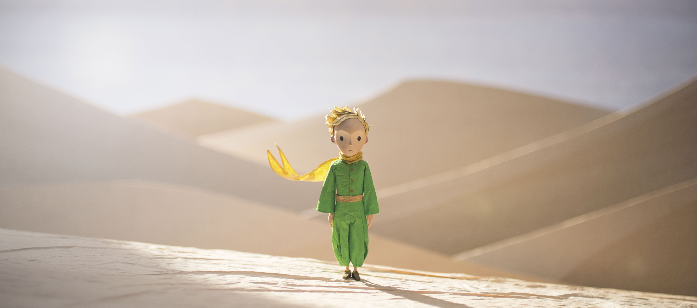
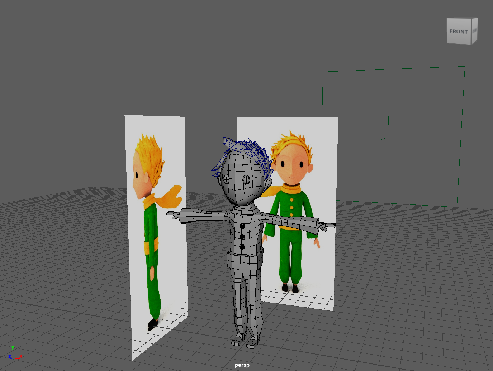
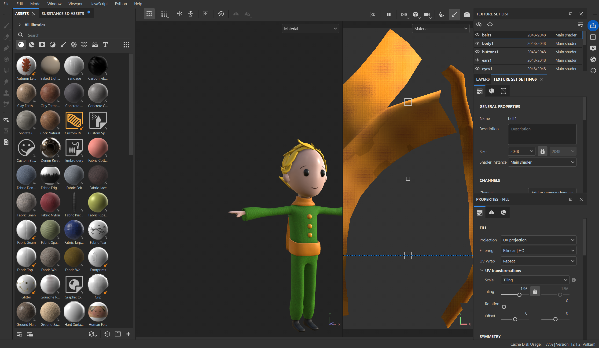
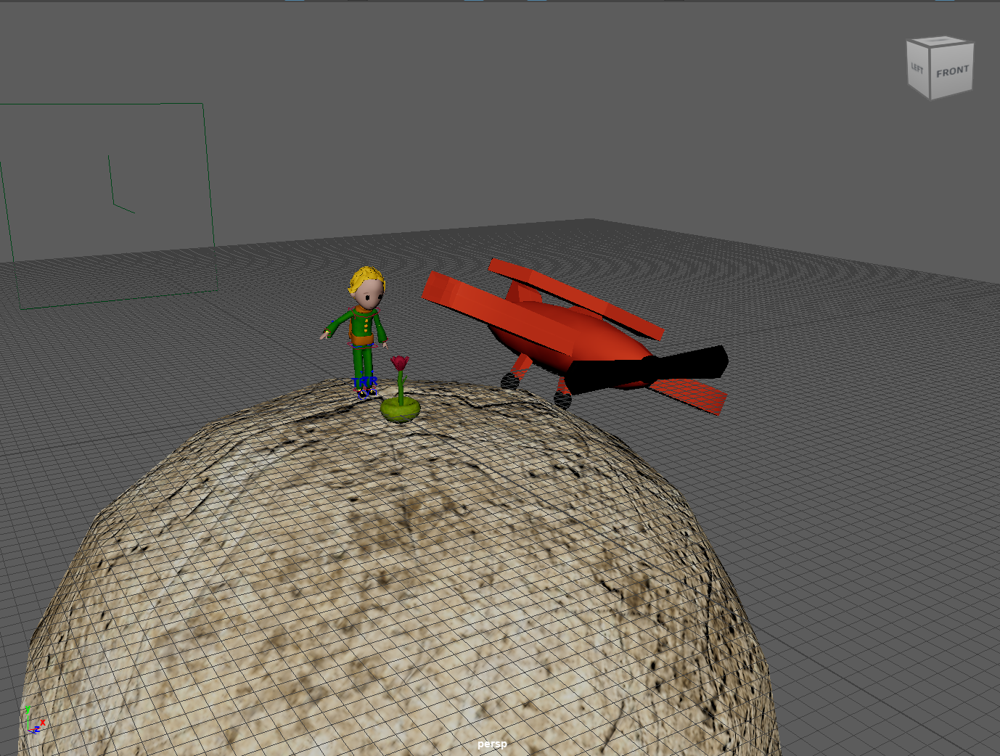
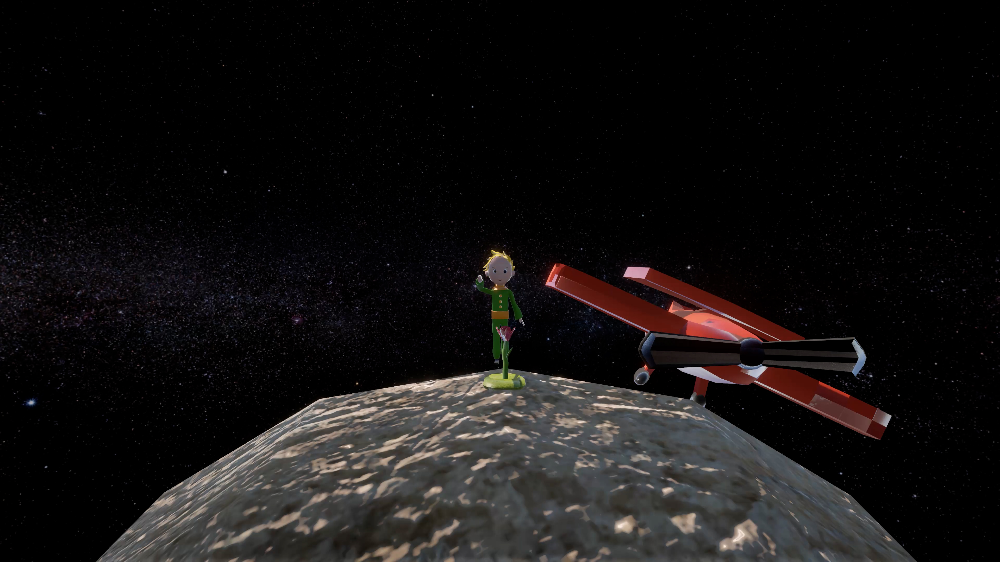

Opdracht
Voor het vak 3D Modeling & Animatie aan MCT bij Erasmushogeschool Brussel kregen we de opdracht om een kortfilm van 20 seconden tot 1 minuut te maken. Het verhaal speelt zich af in een museum, waar het hoofdpersonage zich tussen de personages van medestudenten begeeft. Naarmate het personage dieper het museum binnengaat, ontvouwt zich een uitzonderlijke gebeurtenis.

Bron: The Little Prince, 2015 animated film directed by Mark Osborne

Onderzoek
Voor mijn project koos ik het personage Le Petit Prince, specifiek het ontwerp uit de film van Mark Osborne (2015).
Voordat ik begon met modelleren in Maya, zocht ik eerst goede referentiefoto’s om als basis te gebruiken.


Proces
Tijdens het modelleren kreeg ik feedback van mijn docent, waarbij bleek dat er in het begin van mijn model een aantal grote fouten zaten. Daarom ben ik opnieuw begonnen. Uiteindelijk was deze moeite de moeite waard: het nieuwe model leek veel accurater op Le Petit Prince.
Toen mijn model in Maya klaar was, ben ik in Adobe Substance Painter begonnen met het textureren.
Tijdens dit proces begon ik me steeds meer te verdiepen in de setting en het scenario waarin mijn karakter zich zou bevinden.

Uiteindelijk besloot ik om een aantal props bij te modelleren, zoals:
- De planeten uit het boek
- Het vliegtuig van Le Petit Prince
- Zijn vriendin, de roos
Ik had ook een lantaarn en een boom gemodelleerd, maar deze heb ik uiteindelijk niet meegenomen in mijn definitieve ontwerp, omdat ze niet voldeden aan mijn verwachtingen.

Uiteindelijk heb ik de video anders ingevuld dan oorspronkelijk gepland. In plaats van de planeten uit het boek te modelleren, gaf ik elke planeet een eigen personage – gebaseerd op de karakters van medestudenten, elk in een unieke statuepose.
Aan het einde van de video komt Le Petit Prince deze personages weer tegen op een nieuwe planeet.

Eindresultaat
Uiteindelijk heb ik de video anders ingevuld dan oorspronkelijk gepland. In plaats van de planeten uit het boek te modelleren, gaf ik elke planeet een eigen personage – gebaseerd op de karakters van medestudenten, elk in een unieke statuepose. Aan het einde van de video komt Le Petit Prince deze personages weer tegen op een nieuwe planeet.

